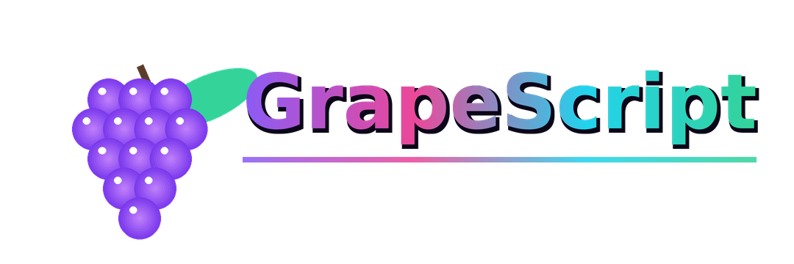

живой островок сайта — как островок 2.0 в приложении, только здесь
Расписание яркости и громкости, островок под фронтальной камерой, Grape Link по NFC и Wi-Fi, лаборатория железа, бенчмарк, эхо-линейка, пульс камерой и проверка глаз — 79 живых плиток в одном приложении для Android. А попробовать часть функций можно прямо в браузере.
—
начало
папки · фазы чипа · поиск
схема экрана приложения · плитки живые, как в Metro
Каждая функция что-то меряет, включает или считает — без картинок «для вида». Значок «веб» значит: это можно потрогать прямо сейчас в веб-версии. «Android» — функция живёт в APK, потому что браузеру не дают NFC, системную яркость и датчики телефона.
Тот же каталог, что и в приложении: семь папок, поиск и сортировка. Плитки строго квадратные — как в Windows Phone. Белая точка — функция есть в веб-версии. Нажми плитку, чтобы узнать подробности.
Большой замысел четвёртой версии оболочки, доведённый до конца в релизе 4.0.4. Полный список с именами файлов лежит в репозитории (docs/gsui4-final.md) — можно проверить, а не верить.
Веб-версия — настоящая, а не рекламный макет: в ней работают каталог, редактор правил, бенчмарк, эхо-линейка, проверка глаз, генератор тона, фонарь-строб и многое другое. Но телефон умеет больше браузера.
APK берётся из официальных релизов GitHub — оттуда же его скачивает само приложение при обновлении. Сайт сам проверяет, не вышла ли версия новее, и подставляет свежую ссылку (как фирменная проверка обновлений в GSYNK).
Эхо-линейка, проверка глаз, пульс камерой и канал связи в «GSYNK рядом». Подпись та же, что у прошлых версий, — ставится поверх без потери данных.
Данные хранятся на устройстве. В интернет GSYNK ходит за проверкой обновлений на GitHub, в переписку с агентом (тоже GitHub) и к ИИ-сетям, если ты сам ввёл их адреса. Отчёты о сбоях перед отправкой чистятся санитайзером от секретов. Загрузчик, прошивку и разделы приложение не трогает принципиально.
Веб-версия честно повторяет то, что умеет браузер: каталог, правила, бенчмарк, замеры камерой и микрофоном, тон и свет. NFC, системная яркость, островок поверх приложений и датчики железа браузеру недоступны — для них нужен APK. Сравнение выше на странице.
Да. Эхо-линейка меряет задержку между щелчком динамика и его отражением, скорость звука зависит от температуры (343,4 м/с при 20 °C). Пульс — фотоплетизмография: камера видит, как кровь меняет пропускание света пальцем, частота ищется автокорреляцией. Точность честно ограничена, и приложение прямо говорит, когда замеру верить нельзя. Это не медицинские приборы.
Это Metro — дизайн Windows 8 / Windows Phone: сетка, квадратные плитки 1×1, 2×2 и 4×2, типографика Segoe UI. Скругления в GSYNK точечные: плитки квадратные, островок максимально круглый, переключатели — средне.
Репозиторий: github.com/GrapeGG-developer/GSYNKAPP.
Нужны JDK 17 и Android SDK 36, дальше одна команда: bash check.sh — она же прогоняет 306 тестов и Lint.

powered by GrapeScript